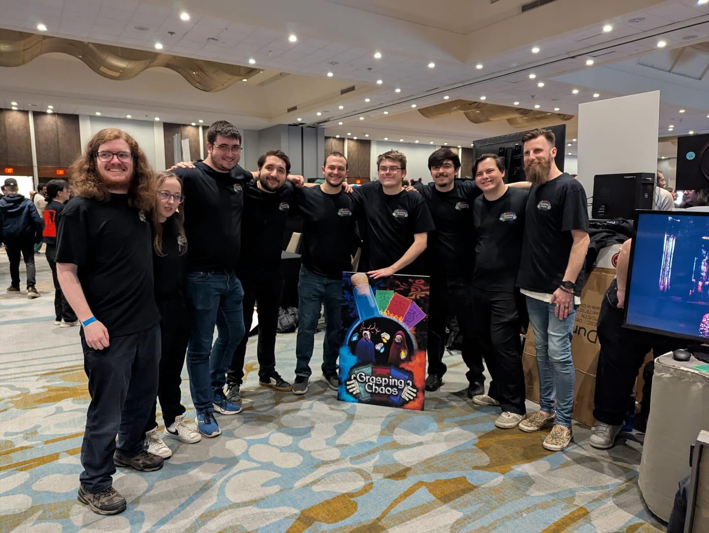

Capstone · 9-student team · Unity (C#)
Grasping Chaos is a strategic, round based action card game where players duel as skeletal mages with each trying to shatter the other's life force.
Your life force? Your fingers. Lose a bone, and lose your grip on victory! Outsmart your opponent using spell cards, mind games, and magical rings to emerge victorious in the skeletal standoff.
Grasping Chaos was developed as part of our final year capstone project at Niagara College. The project was split into two major phases.
Design Phase (Fall Semester): During the first semester, our nine person team focused on the core vision of the game building the world, designing its magical card mechanics, and establishing the visual and gameplay identity of Grasping Chaos.
Development Phase (Winter Semester): The second semester was dedicated to building the game in Unity, implementing gameplay systems, designing and animating the spellcasting sequences, and integrating all the visual, audio, and technical components into a playable game!
Our hard work culminated at the LevelUp Showcase, a major student game expo where teams from colleges and universities across Ontario presented their final year games. Grasping Chaos earned 4th place in the People's Choice Award, a testament to the creativity and dedication of our team.
